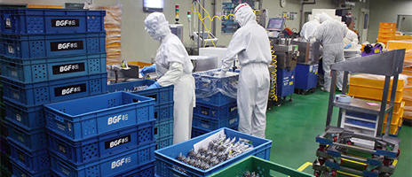
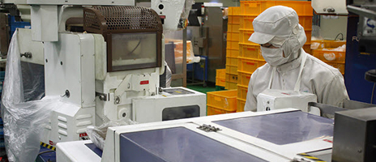
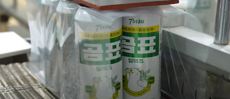
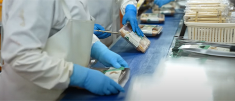

BGF푸드 소개
BGFfood 회사소개
BGF푸드는 믿고 먹을 수 있는 편의점 안심먹거리 생산/R&D 전문기업입니다.
업계 최초의 센트럴 키친(중앙집중조리시스템)을 통해 제조과정의 생산성과 품질을 높이고 있습니다. 더욱 다양해진 고객의 취향과 까다로워진 식품 제조 기준을 만족시키는 데에서 그치지 않고, 감동을 전달할 BGF 푸드의 성장에 새 친구들의 역량을 더 해주시기 바랍니다.
주요활동
BGF푸드는 위생적인 환경을 바탕으로 지속적인 R&D를 통해 상품의 다양함과 질적 향상을 추구합니다.
-

- control tower
- 업계 최초 센트럴키친 설비
-

- amanagement
- 간편 식품의
통합관리 체계 구축
-

- development
- 지속적인 R&D로
다양함과 질적 향상
-
- operation
- 공장과 물류센터의
동시 운영
식품제조&물류 사업
언제나 믿고 먹을 수 있는 편의점 안심 먹거리 생산/R&D 전문 기업!
식품제조사업


BGF푸드는 위생적인 환경에서 안심먹거리를 개발하는 것을 바탕으로 지속적인 R&D를 통해 상품의 다양함과 질적 향상을 추구합니다. 또한 간편 식품의 통합관리 체계를 구축하고 컨트롤 타워의 역할을 수행함으로써 협력업체들에게 좋은 모델이 되고자 합니다.
유통사업


BGF푸드는 도시락, 주먹밥, 김밥, 샌드위치, 햄버거 등 신선식품을 생산하는 도시락 공장과 상온·저온 상품 및 잡화를 취급하는 물류센터의 동시 운영으로 광주, 전라도, 대전, 충청도의 생산 및 물류 거점 역할을 하고 있습니다.